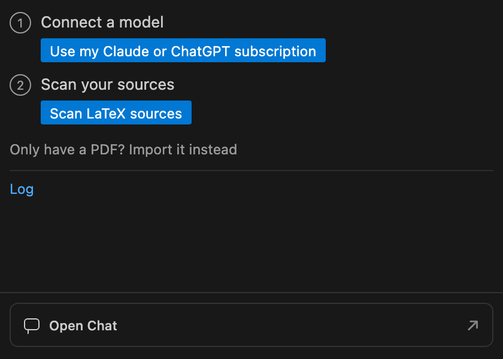
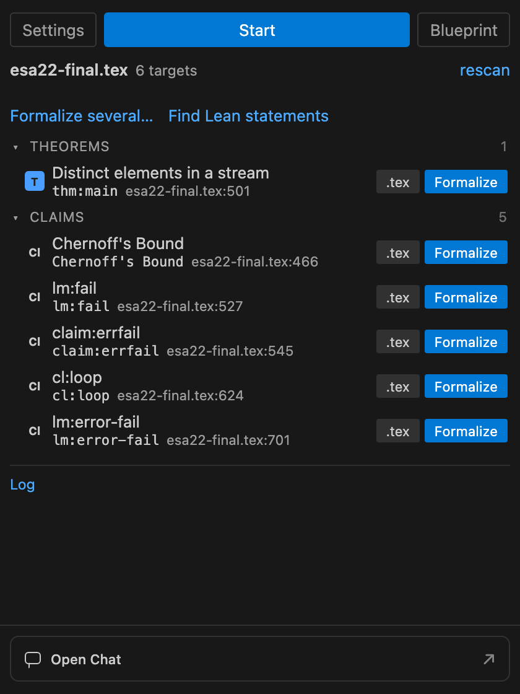
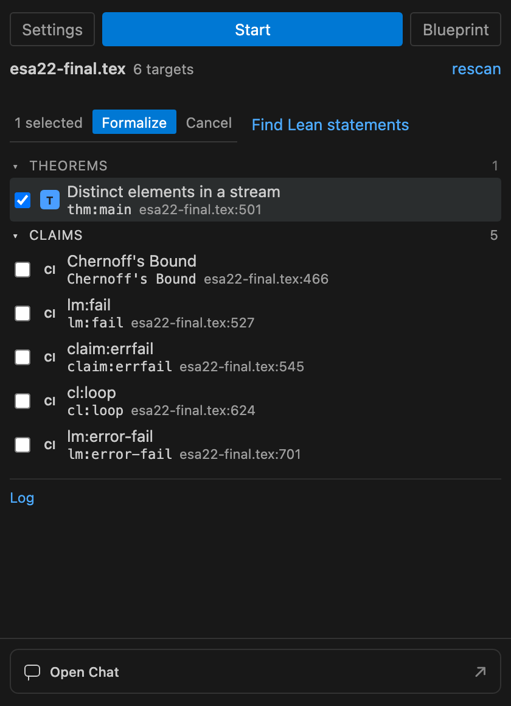
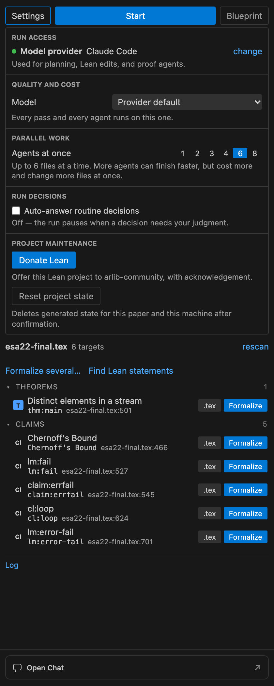
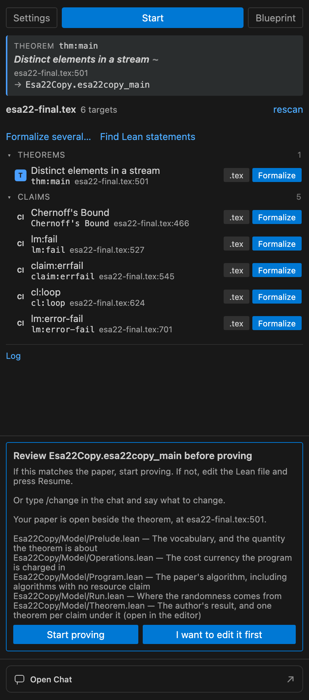
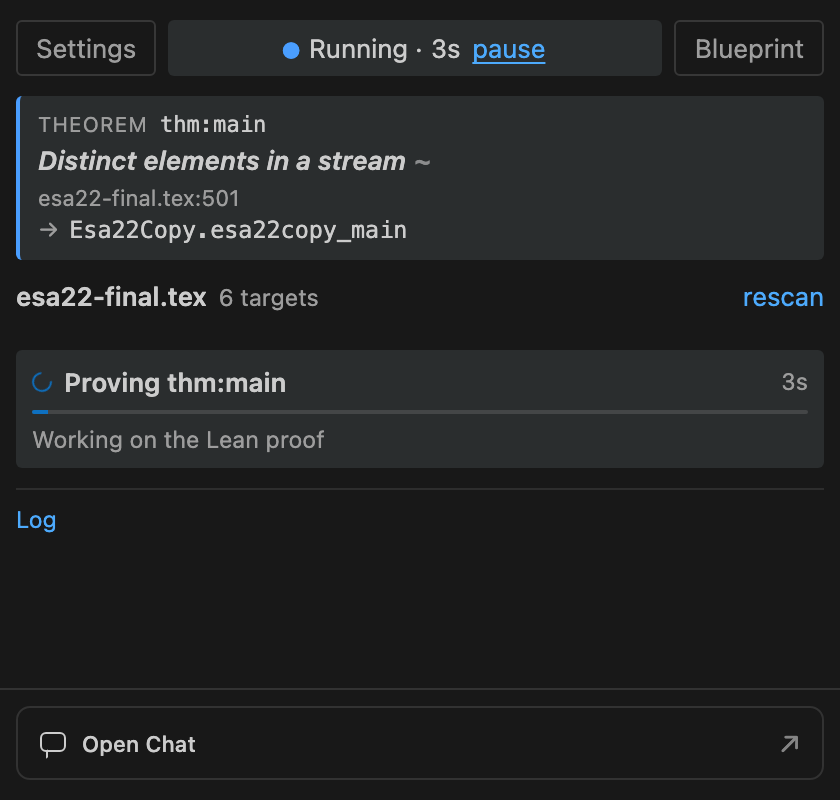
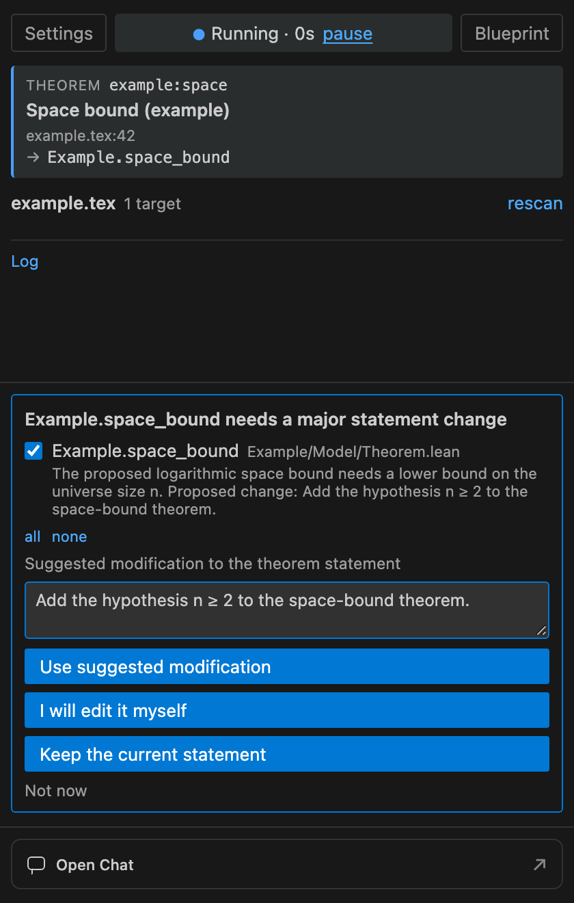
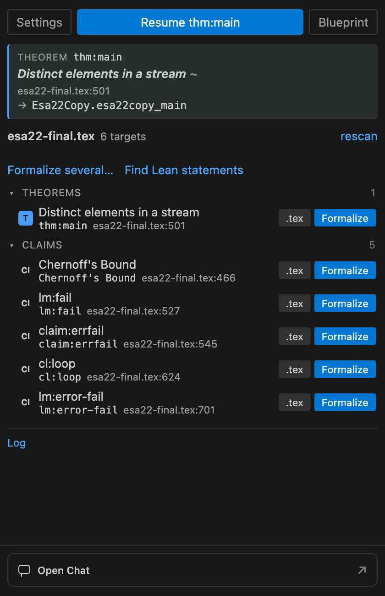
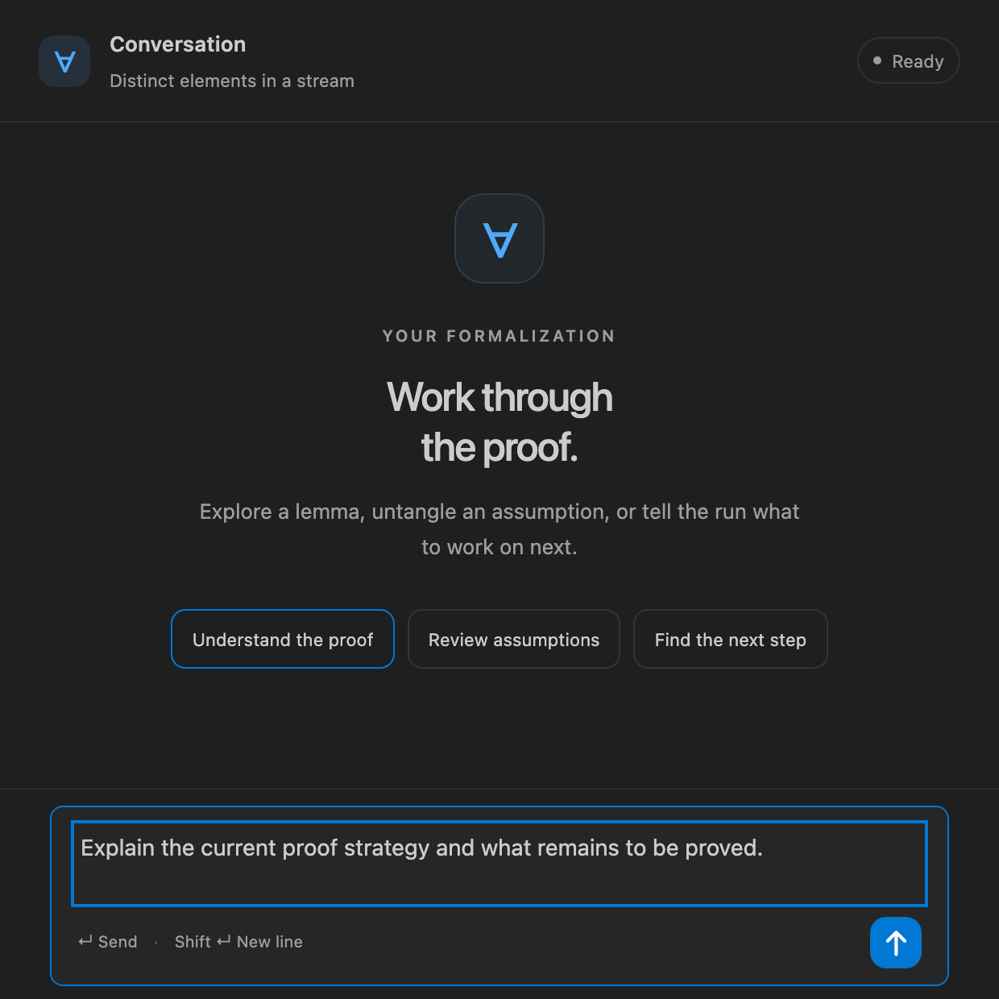

Using Tex2Lean, step by step.
Instructions for the sidebar and chat controls, with examples of scanning, statement review, proving, and proposed restatements.
Mockups rendered with the real extension interface, using the ESA22 paper and run as the example.
STEP 01
Connect and scan
Open the folder containing your paper in VS Code, then open the Tex2Lean sidebar. Complete Set Up if prompted. This first screen gets your model connection and paper ready.

-
Connect a model
Opens the connection choices. Select your Claude Code or Codex subscription connection, or an available API provider, and follow its prompts.
-
Scan LaTeX sources
Reads the paper and finds statements you can formalize. If several root files are available, choose the main paper. In this example it is esa22-final.tex.
-
Import a PDF
Opens the PDF import workflow when LaTeX sources are unavailable.
STEP 02
Choose a result
The scan lists theorem and claim rows with their source locations. Here we use thm:main, the distinct-elements theorem at esa22-final.tex:501.

-
.tex
Opens this result at its line in the LaTeX editor. Use it to read the source before choosing the result.
-
Formalize
Starts formalizing the result on this row: planning the model, writing the Lean statement, and working on its proof.
-
Start
Starts the workflow from the top of the sidebar. When the paper has several statements, Tex2Lean asks which statement to formalize.
-
rescan
Reads the LaTeX sources again and updates the list after you change your paper.
-
Find Lean statements
Finds theorem and lemma declarations already in Model/ and links them to the scanned paper statements. This button does not start proof agents.
STEP 03
Select several results
Click Formalize several… to switch the list into selection mode. Tick the results you want to work on.

-
Result checkboxes
Select or deselect results. The counter above the list shows how many are selected.
-
Formalize selected results
Starts work on the selected results, one at a time in paper order, within the same Lean project.
-
Cancel selection
Leaves selection mode and returns to the normal result list.
STEP 04
Configure the run
Click Settings to expand the controls below the top row. Click it again to close them. The example uses six parallel agents, as configured in the ESA22 run.

-
change connection
Reopens the model-provider connection choices so you can select a different connection.
-
Model dropdown
Chooses the model used by the connected provider. The available entries depend on your connection; Other… lets you enter a model identifier.
-
Agents at once
Sets how many agents can work in parallel. Select a number from the row. During a run, changes apply at the next round.
-
Auto-answer routine decisions
Allows Tex2Lean to answer routine run decisions automatically. With this off, the run stops to ask when it needs your judgment.
-
Donate Lean
Opens the workflow for offering your Lean project to arlib-community through a pull request.
-
Reset project state
Opens a confirmation listing the generated state that would be deleted for this paper and machine.
STEP 05
Review the statement
Tex2Lean opens the model files and asks what to do before proving. The card names the Lean theorem and the files to inspect.

-
Start proving
Accepts the statement review and starts the proof work.
-
I want to edit it first
Holds the run so you can edit the generated Lean statement. When you are ready, use Resume.
-
Open Chat
Opens the conversation beside your Lean file. You can ask about the statement or type /change followed by the changes you want.
STEP 06
Follow the run
The top row shows the current work while proof agents are running. These controls remain available as the run progresses.

-
pause
Stops active work and saves a checkpoint. You can continue with Resume.
-
Blueprint
Opens the formalization maps: paper statements linked to Lean files, and Lean modules linked back to their LaTeX source.
-
Log
Opens the Tex2Lean output log so you can read the run messages.
-
Open Chat
Opens a conversation where you can ask about the current proof or suggest what to work on next.
STEP 07
Respond to a proposed restatement
During proving, Tex2Lean may propose a change to a theorem statement. The card names the theorem, explains the reason, and shows the proposed change. In this example, the proposal adds the hypothesis n ≥ 2 to a space-bound theorem.
Before: a space bound for every universe size n.
Proposed: the space bound with the hypothesis n ≥
2.

-
Select the statement
The checked row identifies the theorem the proposal applies to. If several proposals appear, select the statements you want to address. The all and none links select or clear the rows.
-
Suggested modification text box
Type the statement change you want. For example: “Add the hypothesis n ≥ 2 to the space-bound theorem.” Your text takes priority over the proposal shown in the card. If you leave it blank, Use suggested modification uses the displayed proposal.
-
Use suggested modification
Asks an agent to apply your typed change, or the displayed proposal if the box is blank. Tex2Lean checks the edited development, updates the proof tasks, and continues working on the revised statement. If there is no proposal and no typed change, it asks you to supply one.
-
I will edit it myself
Stops for you to edit the Lean statement and opens its source file when its location is available. Make your changes in the editor, then press Resume. Text in the box is sent as guidance; this button does not ask an agent to apply it.
-
Keep the current statement
Keeps the theorem as written and continues trying to prove it. Any text you entered is treated as proof guidance, rather than permission to change the statement.
-
Not now
Dismisses the proposal and stops this run without authorizing a statement change.
STEP 08
Continue saved work
When a saved run is available, the top button names the result it will continue. Here it is Resume thm:main.

-
Resume thm:main
Loads the saved checkpoint and continues the existing formalization.
-
Blueprint
Opens the maps for exploring the current development.
-
Open Chat
Opens the conversation beside your Lean file.
STEP 09
Ask a question
Open Chat brings up this conversation panel. The example shows an unsent question filled in by Understand the proof.

-
Understand the proof
Fills the message box with a question about the proof strategy and the work that remains. Review the draft, then send it.
-
Review assumptions
Fills the message box with a question about the assumptions used by the current theorem.
-
Find the next step
Fills the message box with a question about the next useful step in the formalization.
-
Message box
Type your own question or instructions. Use Shift+Enter to add a new line. During statement review, /change describes the edits you want.
-
Send message
Sends the text in the message box. You can also press Enter.
Installation and setup
Get started with Tex2Lean